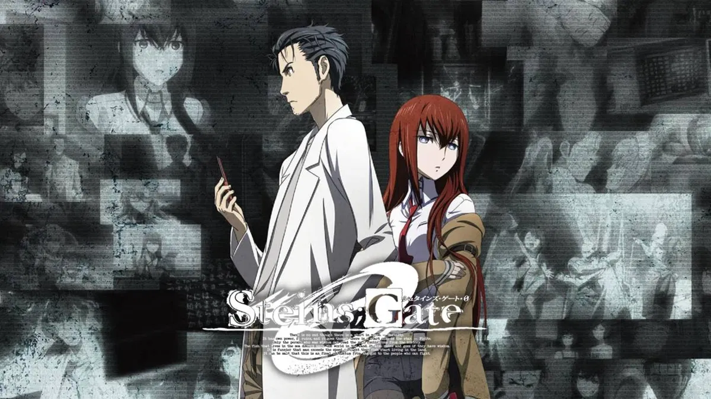

Temporada 1

Está primera temporada cuenta con 24 episodios. Nos muestra la vida de Okabe Rintarou un estudiante universitario algo especial. Se cree un científico loco y tiene un "Laboratorio de artefactos futuristas" que no es más que su departamento. Junto a su amigo Daru experimentan con objetos modificando sus piezas. Un día, por accidente descubren que su microondas modificado es capaz de enviar mensajes al pasado al conectarlo con el celular. Es allí donde comienzan a experimentar con este fenómeno sin ser conscientes del peligro que representa.